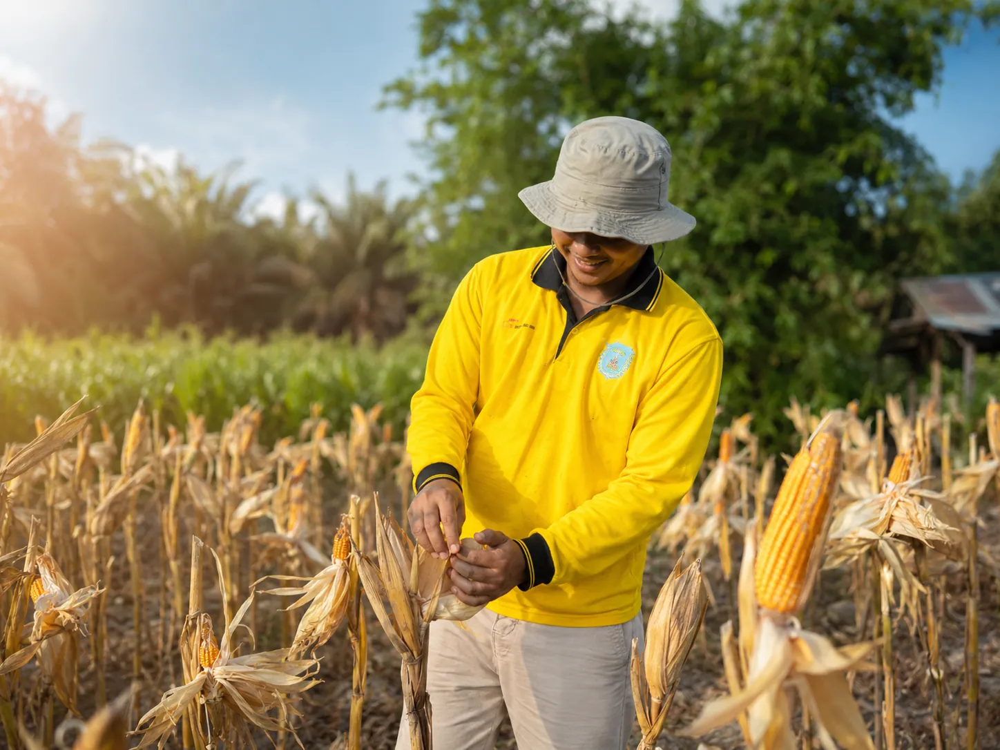
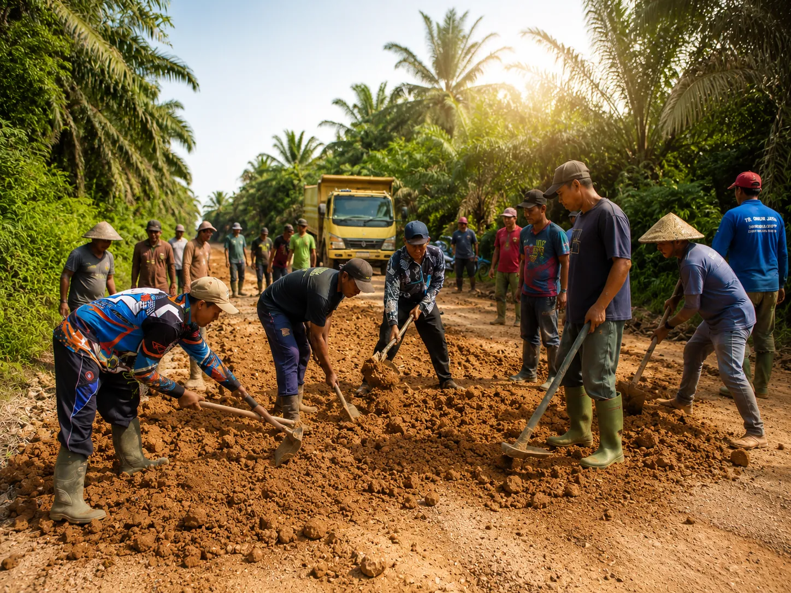
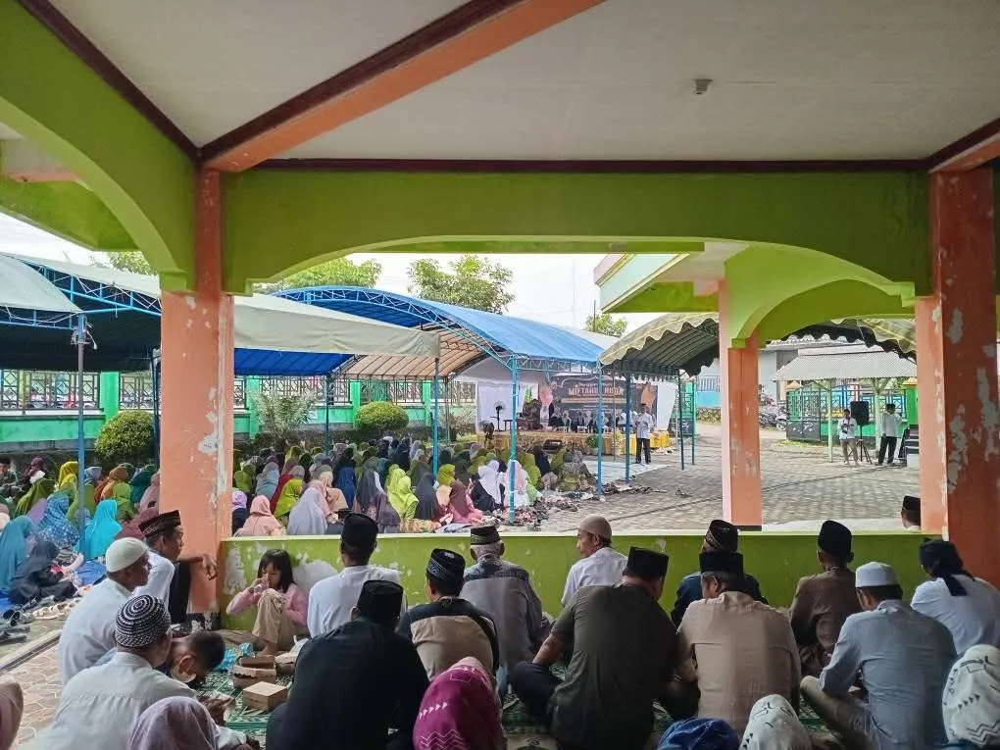
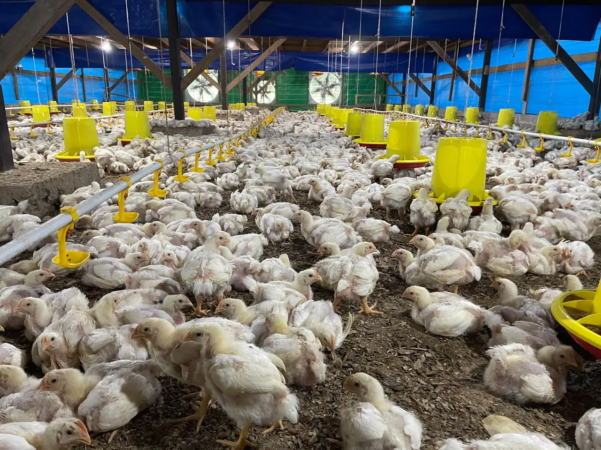
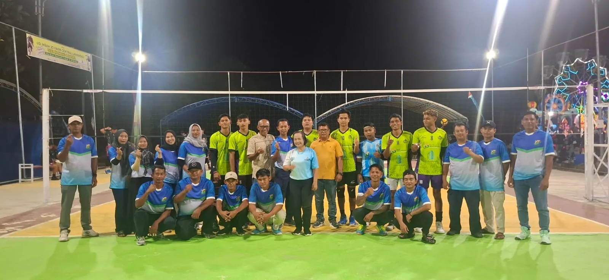
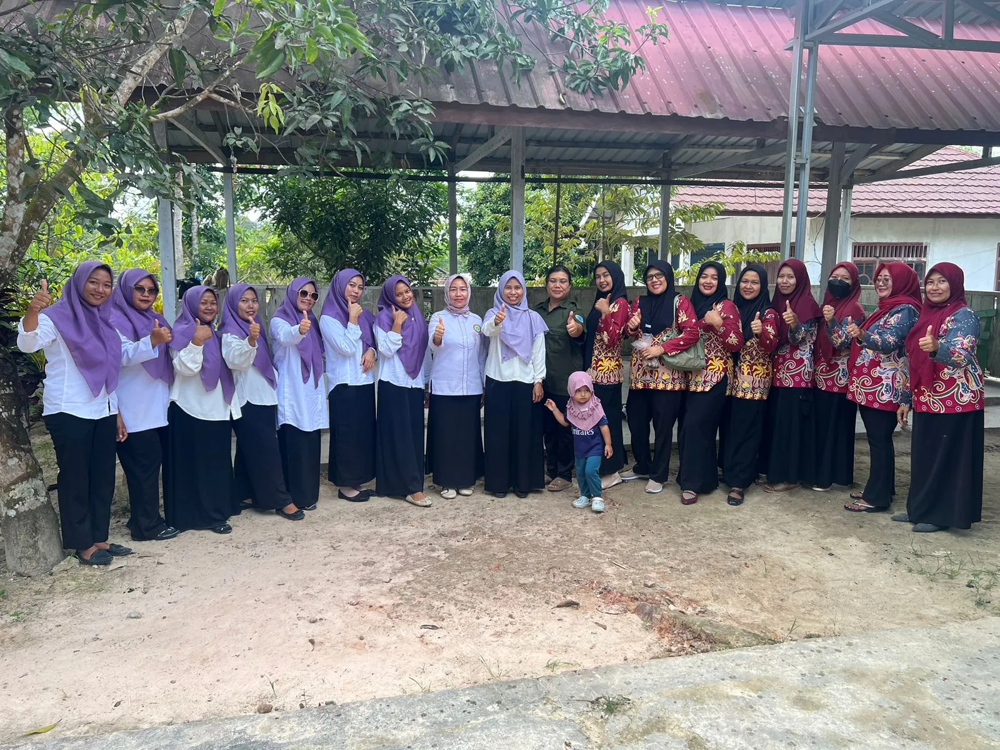
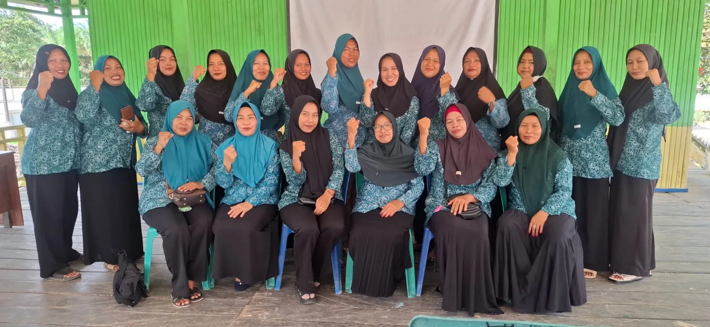
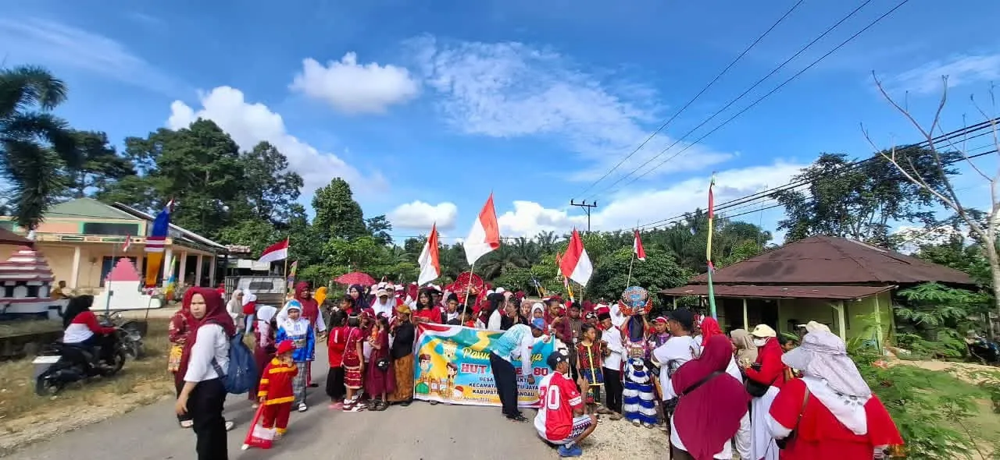

Desa yang tumbuh dengan nilai kebersamaan, kekeluargaan, dan semangat gotong royong dalam membangun masa depan bersama.

Saling membantu dan menjaga hubungan antar warga.
Hidup rukun dalam suasana persaudaraan.
Menjaga keharmonisan kehidupan desa.

Gotong royong menjadi salah satu ciri khas masyarakat Desa Bina Bhakti. Melalui kerja sama dan kepedulian antar warga, berbagai kegiatan pembangunan dan sosial dapat berjalan dengan baik.

Masyarakat Desa Bina Bhakti aktif dalam kegiatan sosial, budaya, kepemudaan dan keagamaan. Nilai sopan santun serta kepedulian menjadi bagian penting dalam kehidupan masyarakat.

Sebagian masyarakat bergerak dalam bidang pertanian, perkebunan, perdagangan, jasa, serta berbagai usaha mandiri.



Pemuda dan perempuan memiliki peran penting dalam mendukung pembangunan Desa Bina Bhakti melalui kreativitas, organisasi, pendidikan, dan kegiatan pemberdayaan masyarakat.
